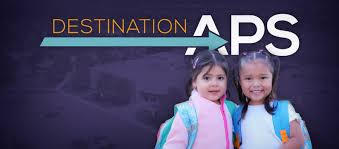
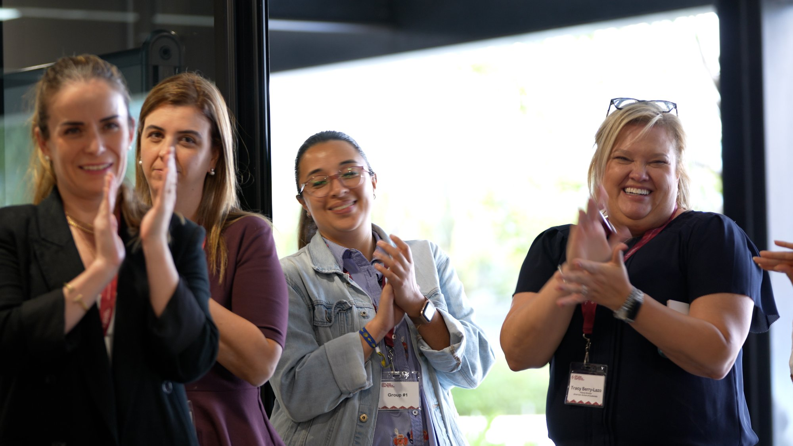
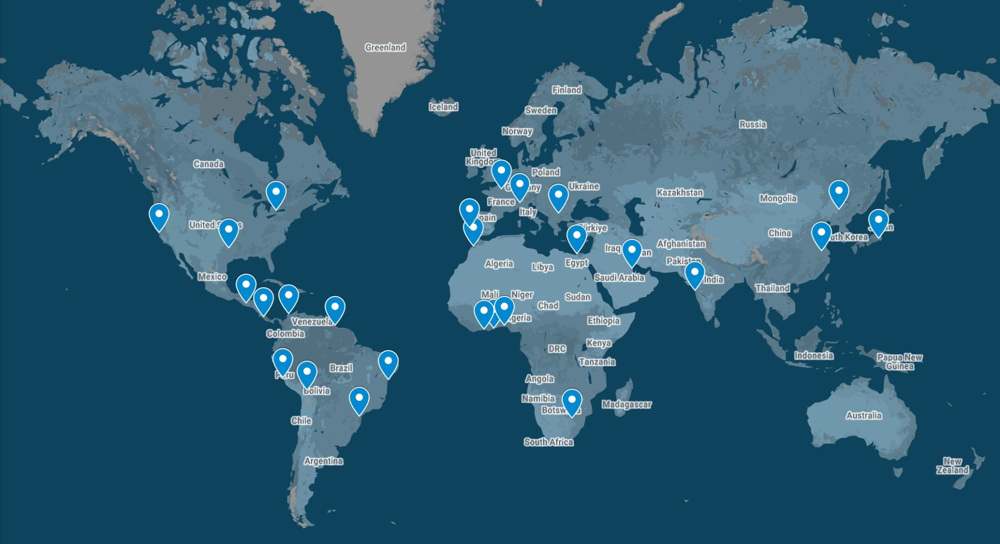

Whitepaper
Educator Ecosystems
Design Principles and Global Strategies for Human-Centered Talent Development.
Read Online →This library brings together Education Accelerated whitepapers, playbooks, case studies, and featured engagements in one place. As the site grows, this page can carry the archive while the homepage stays curated and focused.
These are the pieces visitors can read in-browser without downloading first, while still keeping the original PDFs available when needed.
Design Principles and Global Strategies for Human-Centered Talent Development.
Read Online →A new paradigm for local and global impact, captured as a browser-viewable case study resource.
Read Online →From Factory to Ecosystem: A Championship Playbook for Educational Excellence.
Read Online →These featured case studies now behave the same way as the main site: quick cards here on the page, with deeper details opening in-place.

EA brought the FUSION Process and Think Tank methodology to APS, convening district leadership around a shared strategic direction and building the educator development infrastructure that makes personalized learning pathways possible at scale.
U.S. District Partnership
Nearly fifty stakeholders, board members, teachers, parents, and students, gathered for a three-day Future of Learning Think Tank that aligned the community around seven KeySTONE priorities.
International School
Forty international school leaders convened for a two-day Think Tank that turned friction into forward momentum and sent each participant home with a concrete innovation playbook.
Association Partnership